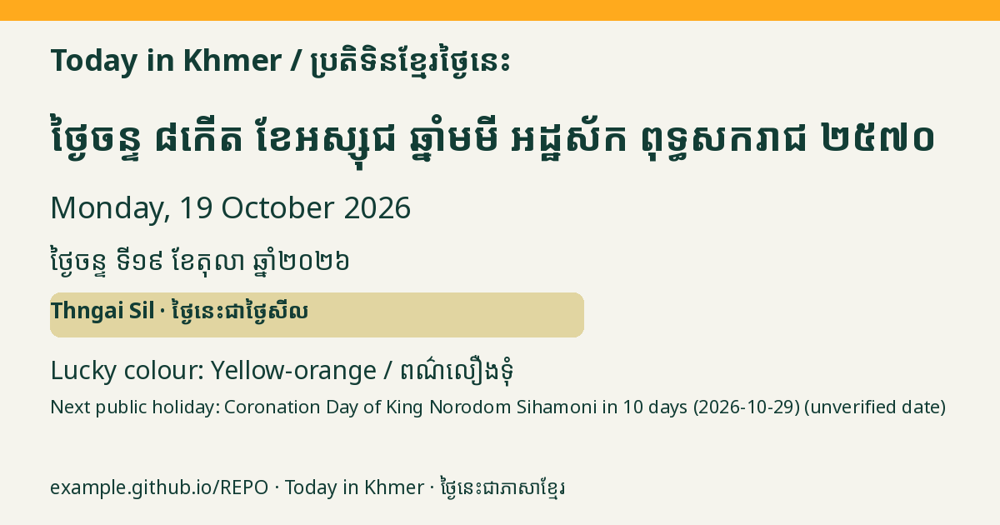

Monday, 19 October 2026
ថ្ងៃចន្ទ ទី១៩ ខែតុលា ឆ្នាំ២០២៦
ថ្ងៃចន្ទ ៨កើត ខែអស្សុជ ឆ្នាំមមី អដ្ឋស័ក ពុទ្ធសករាជ ២៥៧០
8th waxing day of Assoch · Year of the Horse · B.E. 2570
Today is Thngai Sil / ថ្ងៃនេះជាថ្ងៃសីល
Lucky colour: Yellow-orange / ពណ៌លឿងទុំ
Next public holiday: Coronation Day of King Norodom Sihamoni in 10 days (2026-10-29) (unverified date)
